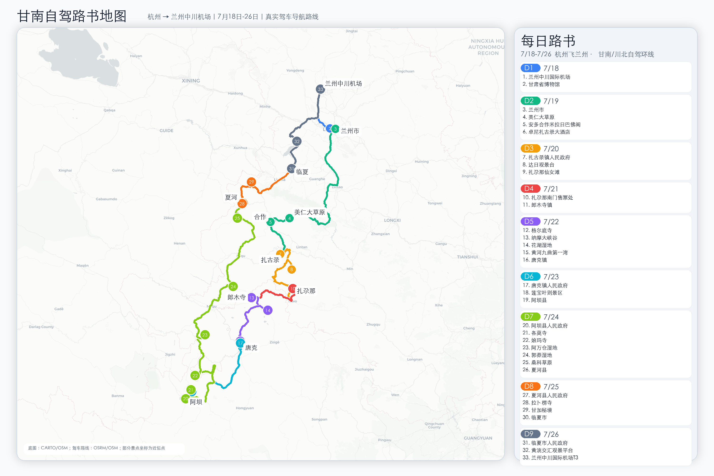

甘肃省博物馆铜奔马/丝路文明重点展品小红书搜图
2026.07.18 - 07.26 · 杭州飞兰州 · 甘南自驾
按最新路线更新：洛克之路、扎尕那、郎木寺、花湖黄河、莲宝叶则、阿万仓、拉卜楞寺与临夏返程。

行程日期：2026 年 7 月 18 日至 7 月 26 日 出发方式：杭州飞兰州中川国际机场，兰州取车自驾 航班：7/18 3U3195 07:20-10:25；7/26 MU2446 17:55-20:40 配套页面：amap-jsapi/gannan-roadbook.html，配套路线图：甘南自驾路书地图_7月18-26.png
这版路线整体可执行，主要风险点是天气、洛克之路路况、D5 是否等黄河九曲日落、D8 甘加秘境开放/交通。
天气/温度为 2026 年 7 月 6 日核对的预报趋势与 7 月高海拔气候参考。甘南、若尔盖、阿坝一线午后阵雨/雷阵雨常见，出发前 3 天务必用中国天气/高德天气逐日复核。
| 日期 | 天数 | 建议住宿 | 主要路线 | 天气/温度参考 | 节奏判断 |
|---|---|---|---|---|---|
| 7/18 周六 | D1 | 兰州市区 | 兰州中川机场 → 甘肃省博物馆 | 32高18低 兰州 多云/阵雨 | 航班到达后轻松适应 |
| 7/19 周日 | D2 | 卓尼扎古录大酒店 | 兰州 → 美仁大草原 → 合作米拉日巴佛阁 → 扎古录 | 30高12低 兰州至扎古录 温差大 | 正常长途日，约 5h 驾驶 |
| 7/20 周一 | D3 | 扎尕那/迭部 | 扎古录镇 → 洛克之路 → 达日观景台 → 扎尕那 | 18高10低 扎尕那 阵雨概率高 | 看天气，避免夜走洛克之路 |
| 7/21 周二 | D4 | 郎木寺国际大酒店 | 扎尕那 → 格尔底寺 → 纳摩大峡谷 → 郎木寺 | 20高8低 郎木寺 高原阵雨 | 轻松转场日 |
| 7/22 周三 | D5 | 阿坝县 | 郎木寺 → 花湖 → 黄河九曲第一湾 → 阿坝县 | 21高8低 花湖/九曲 午后阵雨 | 可行，但别等九曲完整日落 |
| 7/23 周四 | D6 | 久治玉宫酒店 | 阿坝 → 莲宝叶则 → 各莫寺 → 久治 | 20高4低 莲宝叶则 体感更冷 | 景区日，注意高海拔 |
| 7/24 周五 | D7 | 夏河县 | 久治 → 娘玛寺 → 阿万仓 → 郭莽 → 桑科 → 夏河 | 21高7低 草原湿地 多云/阵雨 | 高德约 324km/5.5h，按 8-9h 安排 |
| 7/25 周六 | D8 | 临夏市 | 夏河 → 拉卜楞寺 → 甘加秘境 → 临夏 | 29高12低 夏河至临夏 温差明显 | 文化+草原，核实甘加开放 |
| 7/26 周日 | D9 | 返程 | 临夏 → 黄洮交汇观景平台 → 兰州中川机场 T3 | 31高18低 临夏/兰州 多云/阵雨 | 17:55 航班，13:00 前离开观景平台 |
说明：海拔为公开资料和地图信息的近似值，实际路线上下坡、观景台位置和停车点会有几十到数百米差异；这张图用于判断身体适应节奏，不作为精确测绘数据。
| 路段/节点 | 海拔参考 | 判断 |
|---|---|---|
| 兰州/中川机场 | 约 1500-1950m | 入门适应段，第一天别熬夜 |
| 合作、扎古录、扎尕那、郎木寺 | 约 2550-3400m | D2-D4 持续抬升，夜间注意保暖和睡眠 |
| 花湖、黄河九曲、阿坝县 | 约 3290-3450m | D5 全天在 3300m 左右活动，别把日落拖成夜路 |
| 莲宝叶则 | 约 4200-4520m | 全程最高点，少走快路、少跑跳，身体不适及时下撤 |
| 久治、阿万仓、郭莽、夏河 | 约 2920-3630m | D7 仍是高海拔长驾驶日，控制停留和体力 |
| 临夏、返程机场 | 约 1900m | 海拔明显下降，适合返程前恢复 |
核对时间：2026 年 7 月 5 日。小红书检索本次登录可用，但关键词搜索没有抓到稳定可引用结果；以下以景区官方/公众号公开信息、去哪儿/携程等票务页和公开攻略交叉核对。门票、预约规则和开放范围会随旺季、节假日、天气和临时管控变化，建议出发前 1-2 天再逐项复核。另，网传“甘南所有景点免费”已被公开辟谣，不要按免票营销帖做预算。
浙江免票政策说明：阿坝州曾对浙江省杭州市、温州市、绍兴市、湖州市、嘉兴市、金华市、台州市 7 市户籍游客推出 11 个国有 A 级景区首道门票免票政策，每个景区每年 1 次，名单中包含若尔盖花湖生态旅游区和若尔盖黄河九曲第一湾景区；但官方公布有效期为 2021 年 6 月 12 日至 2026 年 6 月 11 日。本行程游览花湖/黄河九曲为 2026 年 7 月 22 日，默认已过期，不按免票预算；如果出发前阿坝旅游网、景区公众号或四川文旅“感恩礼包”明确延续，再按实名预约免首道门票处理，观光车、扶梯、索道、停车等二次消费仍需另付。莲宝叶则和甘南段景点不在上述阿坝 11 景区名单内，不能直接套用这条免票政策。
| 日期 | 景点 | 提前时间 | 购票/预约渠道 | 票价参考 | 备注 |
|---|---|---|---|---|---|
| D1 | 甘肃省博物馆 | 提前 3 天含当天，通常 0 点放票 | 微信公众号“甘肃省博物馆/这里是甘博”个人预约，官网扫码预约 | 免费 | 周一闭馆，刷身份证入馆；7/18 为周六，仍建议提前约好下午时段 |
| D2 | 美仁大草原 | 不需提前 | 开放式草原，现场停车/消费 | 免费 | 停车、骑马、牧家乐等另计 |
| D2 | 安多合作米拉日巴佛阁 | 当天即可 | 现场窗口，携程/去哪儿可查实时信息 | 登阁约 20 元，停车约 5 元 | 宗教场所现场公告优先 |
| D3 | 洛克之路、达日观景台 | 不购票；出发前 1 天查路况 | 卓尼/迭部文旅、酒店、当地司机、高德路况 | 免费/无统一门票 | 雨雾、塌方、修路比门票更关键，低底盘车谨慎 |
| D3-D4 | 扎尕那 | 旺季建议提前 1-3 天 | 扎尕那官方入口、甘南文旅相关入口、去哪儿/携程 | 成人约 80 元，优待约 40 元 | 暑期可能分时预约或限流，现场票不稳时以线上为准 |
| D4 | 格尔底寺/郎木寺 | 当天即可 | 现场购票 | 格尔底寺/郎木寺区域约 30 元 | 甘肃赛赤寺、四川格尔底寺分属两侧，收费口径可能不同 |
| D4 | 纳摩大峡谷 | 当天即可 | 通常随格尔底寺入口进入，现场确认 | 寺庙入口约 30 元；峡谷本身多为免费 | 骑马、向导等另计；遇雨不建议深入峡谷 |
| D5 | 花湖湿地 | 至少提前 1 天 | 去哪儿/携程/同程，景区公众号或现场；若政策延续则查“阿坝旅游网”实名预约 | 门票+观光车成人约 105 元，学生约 70 元，60-64 岁老人约 30 元 | 旧浙江七市免票名单包含花湖，但有效期至 2026-06-11；本行程默认不免。若官方延续，通常只免首道门票，观光车仍另付 |
| D5 | 黄河九曲第一湾 | 至少提前 1 天 | 去哪儿/携程/同程，景区公众号或现场；若政策延续则查“阿坝旅游网”实名预约 | 门票+上行观光扶梯成人约 105 元，学生约 90 元，60 岁以上/军人/残疾约 45 元 | 旧浙江七市免票名单包含黄河九曲，但有效期至 2026-06-11；本行程默认不免。扶梯/观光车等二消通常不免 |
| D6 | 莲宝叶则 | 建议提前 1 天；旺季好天气提前 2-3 天 | 去哪儿/携程/同程，景区公众号或窗口 | 成人约 120 元，老人/学生约 60 元 | 不在旧阿坝浙江七市免票 11 景区名单内；部分平台需换票，高海拔景区注意体力和天气 |
| D6 | 各莫寺 | 不需提前 | 现场参观 | 免费 | 主殿/室内区域开放时段以现场为准 |
| D7 | 娘玛寺 | 不需提前 | 现场参观 | 免费 | 寺院参观注意着装、拍照和宗教礼仪 |
| D7 | 阿万仓湿地 | 当天或提前 1 天查询 | 现场/票务平台/玛曲文旅信息 | 核心观景台/景区参考约 30 元；外围湿地可能免费 | 官方曾公布试行价，实际按现场收费口径为准 |
| D7 | 郭莽湿地 | 不需提前 | 开放式湿地，现场停车 | 免费 | G213 旁短停点，控制停留时间 |
| D7 | 桑科草原 | 不需提前 | 开放式草原，现场消费 | 免费 | 骑马、藏服、牧家乐、停车等另计 |
| D8 | 拉卜楞寺 | 通常不需线上提前；上午到现场更稳 | 现场窗口/寺院讲解点 | 主殿区约 40 元，贡唐宝塔约 10-20 元；公共区域免费 | 建议请讲解；法会、修缮、宗教活动会影响开放 |
| D8 | 甘加秘境 | 至少提前 1 天，出发前再确认开放范围 | 去哪儿/携程/同程，景区公众号或窗口 | 门票+园内交通成人约 118 元，优待约 78 元 | 甘加秘境历史上有停开/改造公告，务必核实交通和可游区域 |
| D9 | 黄洮交汇观景平台 | 不需提前 | 开放式观景点，现场停车 | 免费/现场为准 | 返程航班日只建议短停，遇堵车或下雨直接去机场 |
说明：当前环境没有可用的飞猪 skill，无法直接读取飞猪实时评分；以下参考携程/Trip.com/Booking/Agoda 等公开页面的评分、点评量和位置。最终预订前请在飞猪、高德、携程再核一次当日价格、取消政策、停车、供氧/电梯/热水。
| 夜晚 | 城市/区域 | 首选 | 备选高评分/更稳选择 | 理由 |
|---|---|---|---|---|
| D1 | 兰州 | 兰州西关张掖路步行街亚朵酒店 / 兰州亚欧国际高空亚朵S酒店 | 兰州建兰智选假日酒店、兰州安宁盛达希尔顿花园酒店 | 亚朵系评分和舒适度较稳；建兰智选靠近甘肃省博物馆/兰州西站；希尔顿花园去机场和西站方便 |
| D2 | 扎古录 | 卓尼扎古录大酒店 | 旅途小憩馆(扎古录镇店)、卓尼云达酒店(扎古录镇店) | 你已指定卓尼扎古录大酒店；携程显示评分约 4.5、点评量较多，位置贴合洛克之路起点 |
| D3 | 扎尕那 | 迭部卓玛啦轻奢民宿 / 迭部扎尕那藏家一号民宿 | 扎尕那观山居度假精品客栈、扎尕那景区大酒店 | Trip.com 页面显示卓玛啦约 9.7/10、藏家一号约 9.4/10；村内住宿利于日落/晨雾 |
| D4 | 郎木寺 | 郎木寺傲途精选宾馆 | 郎木寺国际大酒店 | 你指定的郎木寺国际大酒店位置方便但公开评分偏低；若还没订，傲途精选宾馆更新、携程约 4.6，可作为优先替代 |
| D5 | 阿坝县 | 蓝姆瑞酒店 | 阿坝尊格·洲悦酒店、芊芊芒果树酒店、莫林酒店(阿坝州阿坝县店) | 蓝姆瑞/尊格/芊芊芒果树在公开平台评分较高；阿坝县建议优先选供氧、停车、电梯和早餐 |
| D6 | 久治 | 久治玉宫酒店 | 久治九寨商务酒店、岗仁波非遗酒店 | 你已指定久治玉宫酒店；携程约 4.8、点评量多，且有供氧/停车信息，久治县城里相对稳 |
| D7 | 夏河 | 夏河德吉园酒店 / 潘德·藏家(拉卜楞寺店) | 夏河诺贝赛奥酒店、夏河华侨饭店 | 德吉园、潘德·藏家在 Trip.com 拉卜楞寺附近页面评分约 9.2/10；靠近拉卜楞寺，D8 早上方便 |
| D8 | 临夏 | 临夏八坊十三巷美仑酒店 | 临夏天元万达锦华酒店、临夏河州鸿瑞国际大酒店 | Trip.com 显示八坊十三巷美仑约 9.8/10，临夏住宿条件明显好于前几晚，适合返程前恢复 |
路线：兰州中川国际机场 → 甘肃省博物馆 航班：3U3195 07:20-10:25 住宿：兰州市区
| 时间 | 安排 |
|---|---|
| 10:25-12:00 | 抵达兰州中川机场，取车，检查轮胎、油量、ETC/导航、备胎和玻璃水。 |
| 12:00-13:30 | 机场到兰州市区，午餐可安排牛肉面。 |
| 14:00-17:00 | 甘肃省博物馆，重点看马踏飞燕、丝路文明、彩陶。 |
| 晚上 | 市区晚餐，采购水、能量棒、药品、防晒、雨具。 |
注意：甘肃省博物馆通常需实名预约，周一闭馆；7/18 为周六，仍建议提前预约并确认停止入馆时间。
路线：兰州市 → 美仁大草原 → 安多合作米拉日巴佛阁 → 卓尼扎古录大酒店 住宿：卓尼扎古录大酒店
| 时间 | 安排 |
|---|---|
| 08:00 | 兰州早餐后出发，加满油。 |
| 11:30-12:30 | 美仁大草原短停拍照，午餐建议简单解决。 |
| 13:30-15:30 | 合作米拉日巴佛阁，留 1-1.5 小时。 |
| 16:00-18:00 | 前往扎古录入住，尽量天黑前到。 |
建议：美仁大草原不要停太久；扎古录住宿选择少，确认停车、热水、是否有电梯。
路线：扎古录镇人民政府（洛克之路起点） → 达日观景台 → 扎尕那南门/扎尕那住宿 住宿：扎尕那村内或迭部县城
| 时间 | 安排 |
|---|---|
| 08:00 | 扎古录出发，先确认天气和路况。 |
| 上午 | 洛克之路，重点是路上山谷、垭口、草甸风景。 |
| 中午 | 视路况用路餐，不要把午餐寄托在景区。 |
| 下午 | 达日观景台，继续前往扎尕那方向。 |
| 17:00 前 | 抵达扎尕那住宿，天气好可看日落。 |
注意：洛克之路雨天、雾天、塌方/修路时风险会上升；低底盘车不建议硬走，尽量 SUV，离线地图和满油出发。
路线：扎尕那南门售票处 → 格尔底寺 → 纳摩大峡谷 → 郎木寺国际大酒店 住宿：郎木寺镇
| 时间 | 安排 |
|---|---|
| 05:30-08:00 | 天气好可看扎尕那晨雾/日出。 |
| 08:30-11:30 | 扎尕那村落和观景点补拍。 |
| 12:00-14:00 | 午餐后前往郎木寺方向。 |
| 14:00-17:30 | 格尔底寺、纳摩大峡谷轻徒步。 |
| 晚上 | 入住郎木寺镇，注意保暖。 |
住宿提醒：郎木寺国际大酒店位置方便，但公开平台评分偏低；若还未付款，可对比郎木寺傲途精选宾馆等更新住宿。
路线：郎木寺镇 → 花湖湿地 → 黄河九曲第一湾 → 阿坝县 住宿：阿坝县
| 时间 | 安排 |
|---|---|
| 08:00 | 郎木寺镇出发。 |
| 08:45-11:30 | 花湖湿地，坐观光车/走栈道，注意防晒和风。 |
| 11:30-13:00 | 前往唐克方向，路上午餐。 |
| 13:00-16:00 | 黄河九曲第一湾，下午打卡观景。 |
| 16:00 前后 | 离开九曲前往阿坝县。 |
| 18:30-19:30 | 抵达阿坝县入住。 |
关键取舍：如果特别想看黄河九曲日落，建议改住唐克/若尔盖；若坚持住阿坝，不建议等完整日落后夜路前往阿坝。
路线：阿坝县人民政府 → 莲宝叶则景区 → 各莫寺 → 久治玉宫酒店 住宿：久治玉宫酒店
| 时间 | 安排 |
|---|---|
| 08:00 | 阿坝县早餐后出发。 |
| 09:00-14:30 | 莲宝叶则景区，重点看扎尕尔措一线；身体不适则减少徒步。 |
| 15:00-16:00 | 各莫寺短停。 |
| 16:00-18:00 | 前往久治县，入住久治玉宫酒店。 |
注意：莲宝叶则海拔高，别跑跳；带热水、防晒、雨衣和保暖层。
路线：久治县 → 娘玛寺 → 阿万仓湿地 → 郭莽湿地 → 桑科草原 → 夏河县 住宿：夏河县 高德参考：约 324km / 5.5h；实际按 8-9h 总行程预留。
| 时间 | 安排 |
|---|---|
| 07:30-08:00 | 久治出发，提前加油，准备路餐。 |
| 上午 | 娘玛寺、阿万仓湿地，作为当天重点。 |
| 中午 | 玛曲/碌曲方向路餐或简餐。 |
| 下午 | 郭莽湿地短停，桑科草原路过拍照。 |
| 18:00-19:00 | 抵达夏河县入住。 |
建议：D7 不要每个点都深玩；如果天气差或司机疲劳，优先放弃桑科草原停留，保证天黑前到夏河。
路线：夏河县人民政府 → 拉卜楞寺 → 甘加秘境 → 临夏市 住宿：临夏市
| 时间 | 安排 |
|---|---|
| 08:00-11:30 | 拉卜楞寺，建议请讲解或跟随寺院讲解路线。 |
| 11:30-12:30 | 夏河县午餐。 |
| 12:30-16:30 | 甘加秘境/八角城/白石崖方向，根据开放范围调整。 |
| 16:30-18:30 | 前往临夏市入住。 |
注意：甘加秘境出发前 1-2 天再核实；如核心区受限，改为八角城遗址观景台、白石崖寺和甘加草原路景。
路线：临夏市人民政府 → 黄洮交汇观景平台 → 兰州中川国际机场 T3 航站楼 航班：MU2446 17:55-20:40
| 时间 | 安排 |
|---|---|
| 上午 | 临夏早餐，可视时间逛八坊十三巷。 |
| 11:00-12:30 | 黄洮交汇观景平台，停留 30-45 分钟即可。 |
| 13:00 前 | 必须离开观景平台前往中川机场。 |
| 15:00 左右 | 到机场还车，留足加油、还车、安检时间。 |
如果返程当天遇雨、堵车或身体疲劳，建议取消黄洮交汇，直接去机场。